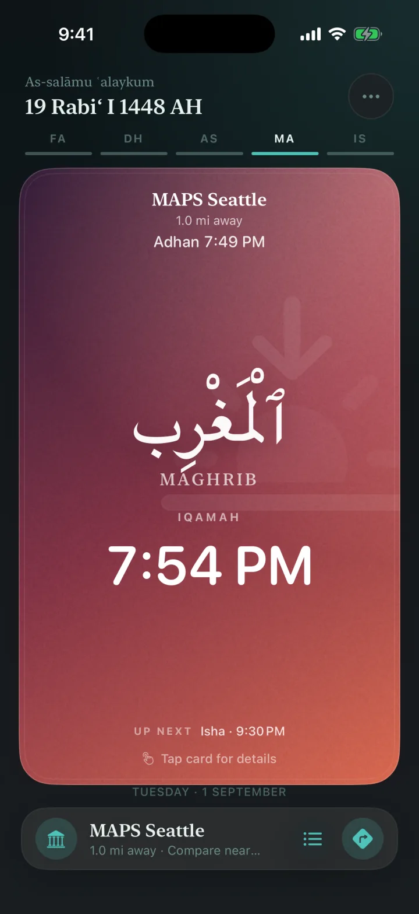
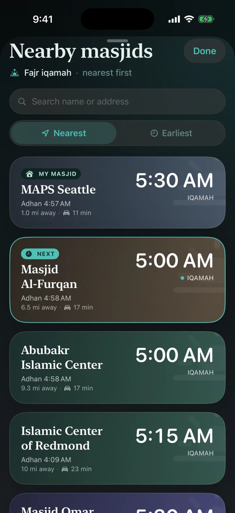
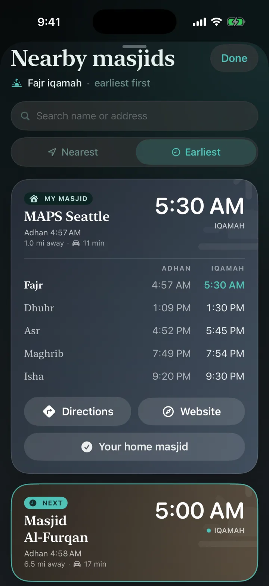
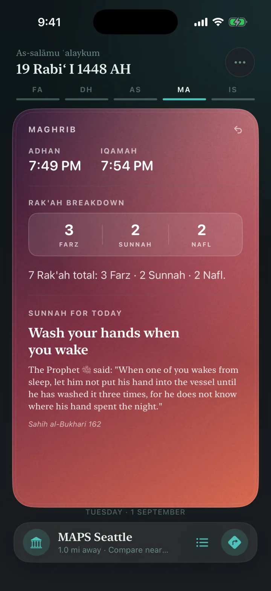
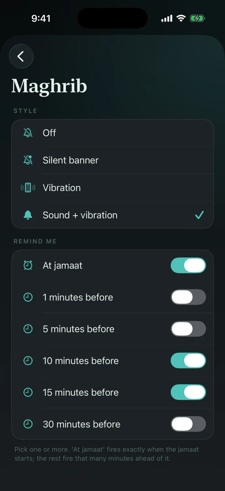
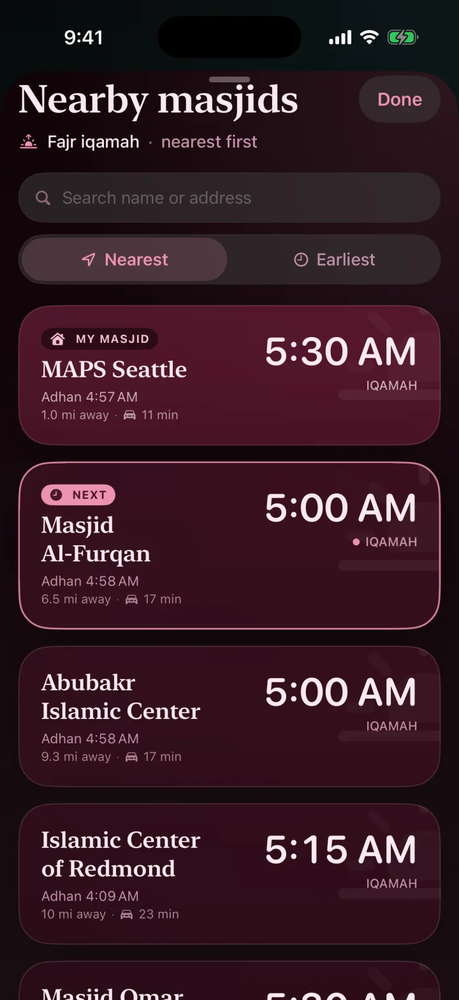
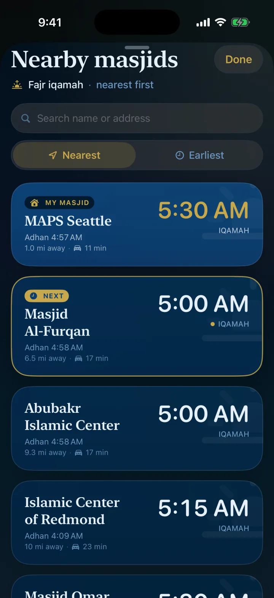
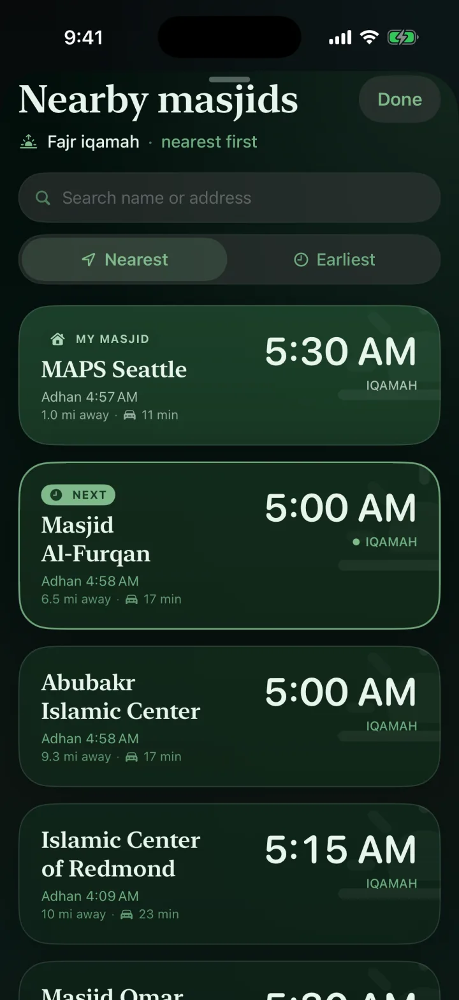

So no one misses the jama’ah.
Salat shows the real iqamah times set by your masjid’s own committee, in one calm, beautiful place.

One prayer. Every masjid. At a glance.
A Weather-style view of the current prayer across every masjid around you, so you can pick the jama’ah you can actually make.
- Committee-set iqamah front and centre, never an estimate
- Distance and real driving time to each masjid
- NEXT highlights the jama’ah coming up soonest
- Travelling? Mosques near you appear even before we have their times

Adhan & Iqamah, side by side.
Open any masjid for its full day: every adhan, every iqamah, and Jumu’ah khutbah times, exactly as the masjid publishes them.
- All five prayers with both adhan and iqamah
- Jumu’ah takes its rightful place on Fridays
- Set any masjid as your home masjid in one tap

A gentle teacher, built in.
Flip any prayer card and Salat becomes a quiet lesson. Perfect for a child learning to pray, and a beautiful reminder for you, on the way to the masjid.

Every prayer gets its own reminder.
Not one generic alarm for everything. Each of the five prayers has its own notification, tuned to how your day actually flows around it.
- Per prayer, pick a style: off, silent banner, vibration, or sound
- Per prayer, pick the timing: at jama’ah time, or 1 to 30 minutes before, and you can stack more than one
- Wake up 20 minutes before Fajr, take 15 and 10 minute nudges for Maghrib, keep Isha silent
- Send a preview to test the style before you rely on it

Make it yours.
Nine calm themes, each tuned for light and dark. Pick one you love, or one your kid loves. Applied instantly.



The full set: Default, Frosted Arctic, Rose Quartz, Emerald Dusk, Ivory & Slate, Sapphire Night, Obsidian & Gold, Midnight Teal, and Navy & Antique Gold.
The time your masjid actually follows.
Reaching the jama’ah used to take three apps. First, figure out which masjid is actually near you. Then dig through its website for the exact iqamah timings. Then open Maps to work out how to get there. Salat fetches the times straight from each masjid and brings everything to one place: the masjids around you, the timings they truly follow, and the way there.
Other prayer apps
- General calculated timings for your city, the same for everyone
- No idea when your mosque actually holds the jama’ah, so the times may not help you reach it
- One generic alarm for every prayer
- Finding the mosque and getting there is still your problem
Salat
- The timings your masjid follows: adhan, iqamah, and Jumu’ah, set by the masjid itself
- Compare every masjid nearby and pick the jama’ah you can make
- Per-prayer reminders: style and minutes-before, tuned prayer by prayer
- Distance and drive time to each masjid, so you arrive before the iqamah
Salat is free forever, with no ads and no tracking, built by the community as a sadaqah jariyah صَدَقَة جَارِيَة and, in time, open-sourced back to it. The story behind that promise lives in our privacy policy. If Salat helps you reach the jama’ah, remember its makers in your prayers.
Every detail considered.
We’re all ears
Salat is shaped by the people who pray with it. Want a feature? Tell us in Settings → Contact us and it joins the community’s wishlist.
You spot it, we fix it
See a wrong iqamah? Report it in two taps and it’s corrected for everyone, fast. The community keeps the times honest.
Next jama’ah on your Lock Screen
A glanceable widget shows the next jama’ah and its time, right on your Lock Screen. No unlock needed.
Your radius
Decide how far “nearby” means, from 5 to 50 miles. Salat only shows masjids you’d actually travel to.
Hijri, always
The Islamic date sits at the top of every day, alongside a warm as-salāmu ʿalaykum.
Nothing to hide
No accounts, no ads, no analytics, no tracking. Your location never leaves your device except to Apple Maps for drive times.
Good to know.
Is Salat really free?
Yes, free forever. No ads, no subscriptions, no in-app purchases, and no accounts. It is built as a sadaqah jariyah for the community.
How are the prayer times verified?
Salat fetches the jama’ah times straight from each masjid’s own source, not from an algorithm. If a time ever looks off, one tap in the app sends us a correction, and the community keeps it accurate.
My masjid isn’t listed. Can I add it?
Absolutely. When a mosque near you doesn’t have times yet, it still appears in the app, and a single tap lets you suggest it. We add it, in shā’ Allāh.
Do you track my location or my prayers?
Never. Your location is used on your device to find nearby masjids, and is shared only with Apple Maps to estimate drive time. Nothing about you or your worship is stored or profiled. The app works even if you decline location.
Which devices are supported?
Salat is exclusively for iPhone, built natively for iOS, with a Lock Screen widget for the next jama’ah. An iPhone-first experience means it stays fast, light, and at home on your device.
Bring your community’s times to Salat.
If you help run a masjid, you can make sure your jama’ah times reach every worshipper who opens Salat nearby. Suggest your masjid or send a correction in seconds, no account needed, and we’ll keep it live for your congregation.
How to add your masjid